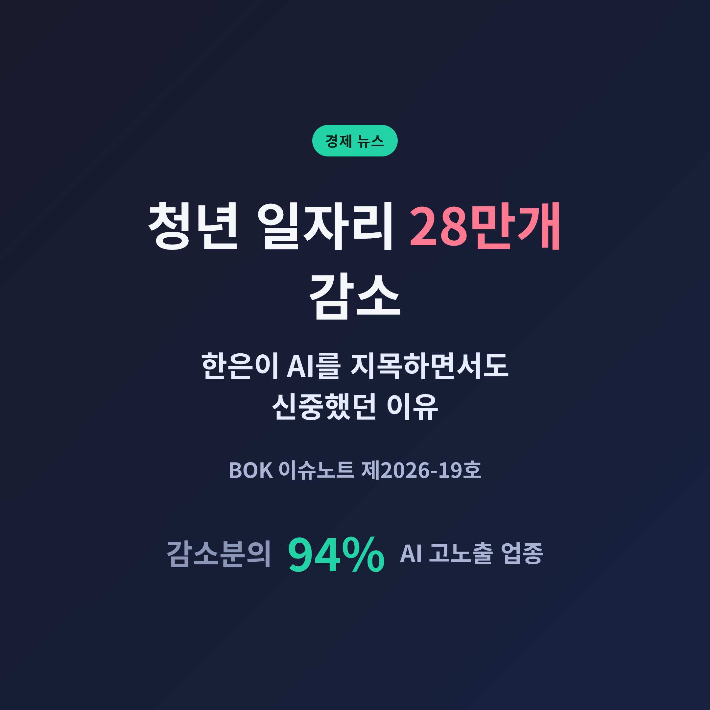
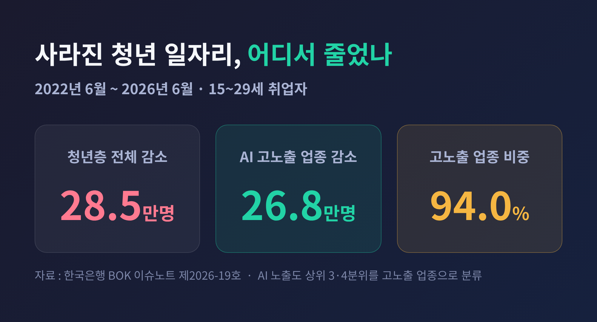
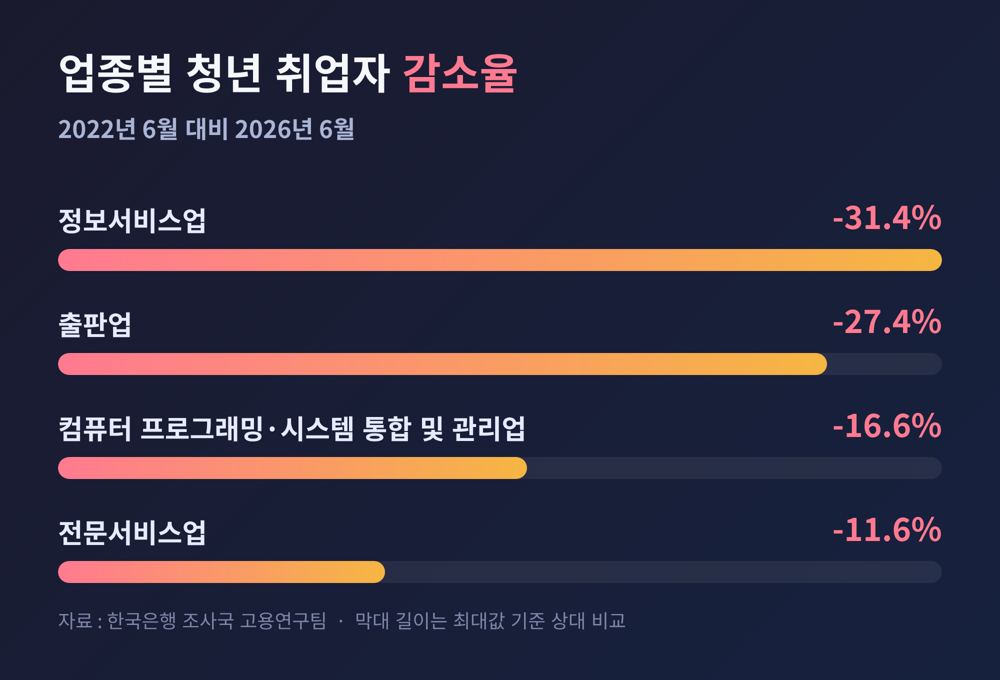
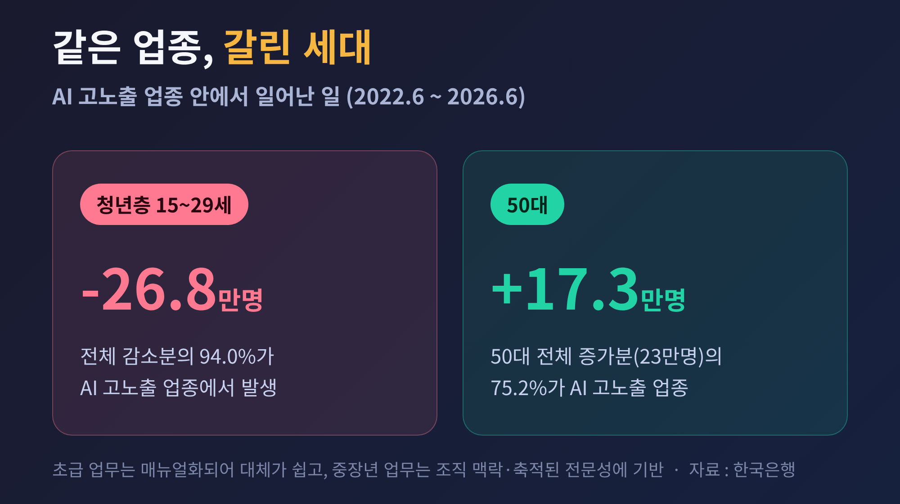
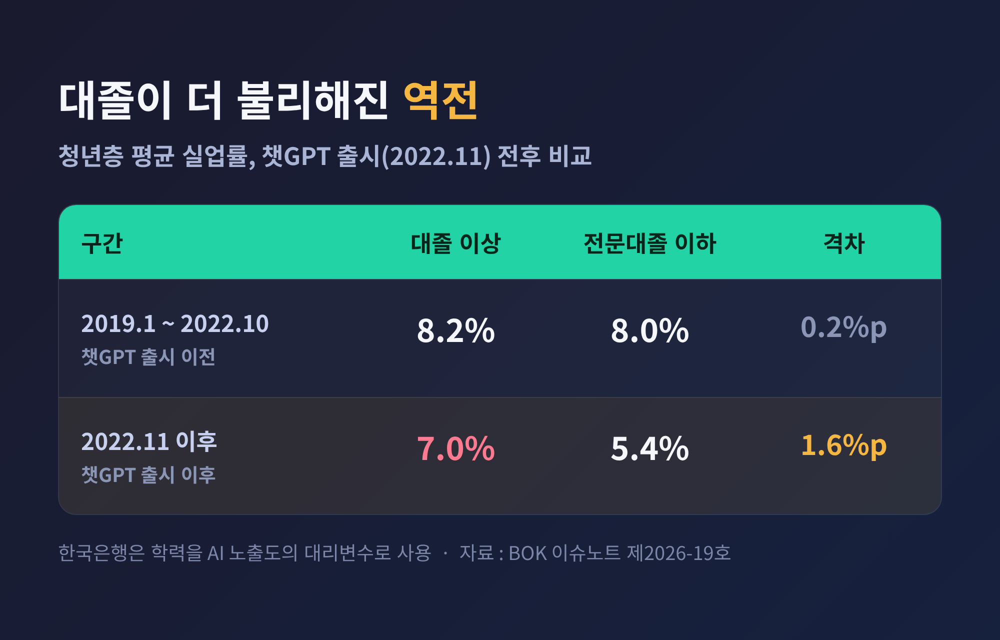
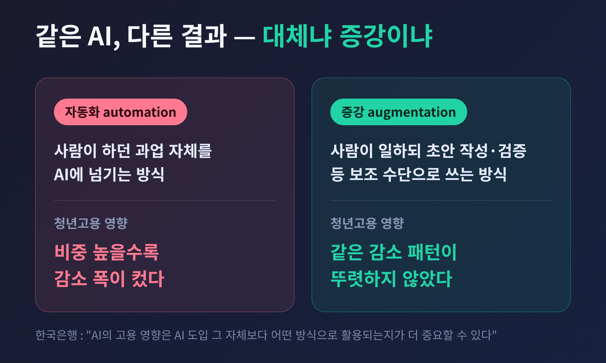
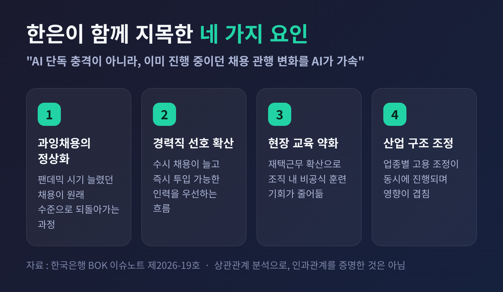

청년 일자리 28만개 감소, 한은이 AI를 지목하면서도 신중했던 이유

한국은행이 청년 고용과 인공지능의 관계를 정면으로 다룬 보고서를 내놓았습니다. 숫자는 선명한데 결론은 조심스럽습니다. 이번 글에서는 그 보고서가 무엇을 보여줬고, 왜 한은이 끝까지 단정을 피했는지 정리해 보겠습니다.
■먼저 숫자부터 봅니다
한국은행 조사국 고용연구팀은 2026년 8월 18일 BOK 이슈노트 제2026-19호를 발간했습니다. 제목은 '청년고용 위축, AI탓인가? 변화하는 경력 사다리와 대응 과제'입니다. 제목 자체가 물음표로 끝난다는 점을 먼저 기억해 두시면 좋겠습니다.
보고서가 잡은 구간은 2022년 6월부터 2026년 6월까지 4년입니다. 이 기간 15~29세 청년층 취업자는 28만 5,000명 줄었습니다. 그리고 그중 26만 8,000명, 비율로 94.0%가 AI 노출도 상위 3·4분위, 이른바 고노출 업종에서 사라졌습니다.
사라진 청년 일자리 열 개 중 아홉 개 이상이 한 곳에 몰려 있었다는 뜻입니다.

업종을 하나씩 열어 보면 윤곽이 더 뚜렷해집니다. 청년 취업자 감소율이 가장 컸던 곳은 정보서비스업으로 31.4%였습니다. 출판업이 27.4%, 컴퓨터 프로그래밍·시스템 통합 및 관리업이 16.6%, 전문서비스업이 11.6% 줄었습니다. 공장이나 건설 현장이 아니라, 사무실에서 문서와 데이터를 다루는 지식서비스 쪽이 먼저 흔들린 셈입니다.

■같은 업종인데 청년만 줄었습니다
이 보고서가 눈길을 끄는 지점은 여기서부터입니다.
같은 4년 동안 50대 취업자는 오히려 23만 명 늘었습니다. 그리고 그 증가분의 75.2%인 17만 3,000명이 다름 아닌 AI 고노출 업종에서 나왔습니다. AI를 많이 쓰는 업종에서 청년은 빠지고 50대는 들어온 것입니다.
예전에는 기술 변화가 오면 산업 전체가 함께 줄거나 함께 늘었습니다. 지금은 같은 산업 안에서 세대가 갈립니다.
오삼일 한은 고용연구팀장은 AI가 주로 맡는 일이 매뉴얼로 정리된 초급 업무이기 때문이라고 설명했습니다. 반면 중·장년이 하는 일은 조직의 맥락에 대한 이해와 오래 쌓인 전문성에 기대는 경우가 많아 상대적으로 대체가 어렵다는 것입니다.
경력 5년차 이하 주니어 자리가 줄고, 시니어 자리는 유지되거나 늘어난 구조. 이것이 보고서가 '경력 사다리'라는 표현을 꺼낸 배경입니다.

■대졸이 더 불리해진 역전
학력별 통계는 조금 더 불편한 이야기를 합니다.
한은은 학력을 AI 노출도의 대리변수로 삼아 실업률을 비교했습니다. 챗GPT가 나온 2022년 11월 이후 대졸 이상 청년의 평균 실업률은 7.0%였습니다. 전문대졸 이하 청년은 5.4%였습니다. 대졸 쪽이 1.6%포인트 높았습니다.
그 이전은 달랐습니다. 2019년 1월부터 2022년 10월까지 두 집단의 실업률은 각각 8.2%와 8.0%로 거의 붙어 있었습니다.
더 오래 공부한 쪽이 더 안전하다는 오랜 전제가, 적어도 이 구간에서는 뒤집혔습니다.

■진짜 갈림길은 '대체'냐 '증강'이냐
여기까지만 보면 결론은 간단해 보입니다. 그런데 보고서에서 가장 중요한 발견은 따로 있습니다.
한은은 AI 활용 방식을 둘로 나눠 봤습니다.
- 자동화(automation) — 사람이 하던 과업 자체를 AI에 넘기는 방식
- 증강(augmentation) — 사람이 일을 하되 AI를 초안 작성이나 검증 같은 보조 수단으로 쓰는 방식
결과는 갈렸습니다. 자동화 비중이 높은 업종일수록 청년고용 감소 폭이 컸습니다. 반면 증강 비중이 높은 업종에서는 같은 감소 패턴이 뚜렷하게 나타나지 않았습니다.
같은 기술을 도입해도 어떻게 쓰느냐에 따라 결과가 달라졌다는 뜻입니다. 한은도 "AI의 고용 영향은 AI 도입 그 자체보다 어떤 방식으로 활용되는지가 더 중요할 수 있다"고 적었습니다.
기술 도입 여부가 아니라 업무 설계가 변수라는 것. 정책이 개입할 여지가 남아 있다는 근거이기도 합니다.

■한은이 끝내 단정하지 않은 이유
보도가 나간 뒤 여러 매체의 제목은 단호했습니다. "AI가 청년 일자리를 뺏었다"는 식이었습니다. 정작 보고서 본문의 어조는 그보다 훨씬 조심스럽습니다.
한은은 최근 청년고용 부진을 모두 AI 탓으로 돌리기는 어렵다고 분명히 선을 그었습니다. 함께 작용했을 수 있는 요인으로 네 가지를 함께 놓았습니다.
- 팬데믹 시기 과잉채용이 정상으로 되돌아가는 과정
- 수시 채용과 경력직 선호 확산 — 즉시 전력감을 원하는 흐름
- 재택근무 확산으로 약해진 비공식 현장 교육
- 산업별 고용 구조 조정
정리하면, AI가 없던 흐름을 새로 만든 것이 아니라 이미 진행 중이던 채용 관행의 변화를 가속했다는 진단입니다.
이 구분은 사소해 보여도 중요합니다. AI가 원인이라면 대응은 기술 규제 쪽으로 갑니다. 채용 관행의 변화가 먼저라면 대응은 훈련과 제도 설계 쪽으로 가야 합니다. 처방이 달라집니다.
덧붙이면, 이번 분석은 'AI 노출도가 높은 업종에서 감소가 집중됐다'는 상관관계를 보여준 것이지 인과관계를 실험으로 증명한 것은 아닙니다. 이 한계는 한은도, 저도 인정하고 읽어야 할 부분입니다.

■들어가기도 어렵고, 버티기도 어렵습니다
그동안 청년 고용 논의는 대체로 '기업이 신규 채용을 줄였다'는 쪽에 집중돼 있었습니다. 이번 보고서는 반대편도 함께 봤습니다.
팬데믹 구간을 빼고 2016~2019년과 2022~2026년을 비교했더니, AI 고노출 업종에서 상용직으로 일하다 미취업 상태로 빠져나간 청년이 월평균 3,700명에서 4,900명으로 약 32% 늘었습니다. 같은 기간 새로 들어온 청년은 월평균 3만 2,600명에서 2만 9,100명으로 약 11% 줄었습니다.
문턱은 높아졌고, 넘어간 뒤에도 오래 머물지 못합니다.
오 팀장은 청년의 일자리 이탈이 고용 감소에 기여했다는 점이 이번에 확인됐다고 평가했습니다. 첫 직장에서 경험과 숙련을 쌓아 다음 단계로 올라가는 경로 자체가 얇아지고 있다는 신호입니다.
■한국만의 일은 아닙니다
같은 신호가 다른 나라에서도 잡힙니다.
미국에서는 스탠퍼드 디지털이코노미랩이 에릭 브리뇰프슨 등의 이름으로 'Canaries in the Coal Mine?'이라는 연구를 이어가고 있습니다. ADP 급여 데이터를 쓴 2026년 8월 업데이트판에 따르면, 22~25세 청년의 AI 고노출 직종 고용은 같은 연령대 저노출 직종과 같은 속도로 늘었을 경우에 비해 약 19% 낮은 수준이었습니다. 1년 전 조사의 15%에서 격차가 더 벌어졌습니다. 반면 경력이 쌓인 근로자에게서는 그에 상응하는 격차가 나타나지 않았습니다.
다만 이 연구도 경제 전반의 광범위한 일자리 대체 증거는 없다고 못 박았습니다. 격차는 해고가 아니라 주로 신규 채용 축소를 통해 만들어졌다고 봤습니다. 한은의 결론과 결이 비슷합니다.
영국은 숫자가 더 급합니다. 채용 플랫폼 애드주나 집계로 2026년 7월 신규 졸업자 대상 일자리는 8,383건, 전년 대비 45% 감소해 2016년 집계를 시작한 이래 가장 적었습니다. 졸업생 일자리 한 건당 구직자는 2.14명으로 1년 전 1.93명에서 늘었습니다.
그런데 영국 사례에는 단서가 붙습니다. 현지에서는 AI 도입과 함께 최저임금 인상, 고용주 국민보험료 인상 같은 인건비 요인도 나란히 지목됩니다. AI 하나로 모든 것을 설명하려는 시도가 왜 위험한지 보여주는 사례입니다.
■셋의 셈법이 서로 다릅니다
이 문제를 두고 이해관계가 정확히 엇갈립니다.
청년 구직자에게는 진입과 유지가 동시에 어려워진 상황입니다. 국가데이터처가 2026년 8월 12일 발표한 7월 고용동향을 보면, 청년층 취업자는 전년 대비 19만 1,000명 줄어 45개월 연속 감소했습니다. 청년 고용률은 44.2%로 27개월 연속 내려갔고, 청년 실업률은 6.8%로 1.3%포인트 올랐습니다. 상승폭으로는 2021년 1월 이후 5년 6개월 만에 가장 컸습니다.
기업 채용팀의 선택은 그 자체로는 비합리적이지 않습니다. 초급 업무를 자동화하고 즉시 투입 가능한 경력자를 뽑는 편이 당장은 효율적입니다. 문제는 모든 기업이 같은 판단을 내릴 때 생깁니다. 오 팀장은 이를 두고 사회 전체적으로는 숙련 인력 공급이 끊기는 '인재 파이프라인' 문제가 생길 수 있다고 지적했습니다. 5년 뒤 중간 관리자를 어디서 데려올 것인가 하는 질문입니다.
정부의 고민은 대책의 축을 어디에 둘 것인가입니다. 정부는 8월 28일 비상경제본부회의에서 청년일자리 회복방안을 다뤘습니다. 2030년까지 첨단산업 전문인력 30만 명 이상 양성과 일자리 20만 개 이상 창출, 청년일자리 도약장려금 확대, 국민취업지원제도 구직촉진수당 월 60만 원에서 65만 원 인상, 교육·훈련 참여 청년과 기업을 잇는 '청년 플레이그라운드' 신설, 사업주 채용지원금 최대 720만 원에서 1,800만 원 상향 등이 담겼습니다.
방향은 나쁘지 않습니다. 다만 아직 시행 초기여서 효과를 평가할 자료는 나와 있지 않습니다. 여야 어느 쪽의 설계든, 초급 일자리를 숫자로 떠받치는 데 그친다면 같은 문제가 몇 년 뒤 반복될 수 있습니다.
■앞으로는 어떻게 될까요
한은의 제언은 명확한 편입니다. 사라지는 초급 일자리를 그대로 보전하는 데 매달리기보다, 청년이 AI를 쓰면서 경험과 숙련을 쌓을 수 있는 새로운 경력 사다리를 설계하자는 것입니다. 직업훈련과 멘토링 비용 지원이 구체적인 예로 제시됐습니다.
전망을 낙관과 비관 어느 한쪽으로 몰지도 않았습니다. 기업의 업무와 조직 구조가 AI에 맞춰 재편되면 지금 없는 직무와 노동수요가 생겨날 수 있다고 봤습니다. 무엇보다 새 기술에 가장 빨리 적응하는 쪽이 청년이라는 점을 짚었습니다. AI가 학습과 업무를 보완하는 방향으로 자리 잡는다면, 장기적으로는 지금 가장 큰 타격을 받는 세대가 가장 큰 수혜자가 될 수 있다는 것입니다.
물론 이는 조건부 전망입니다. 그 조건이 저절로 충족되지는 않습니다.
정리하면 이렇습니다.
한국은행이 보여준 것은 'AI가 청년 일자리를 없앴다'는 단순한 문장이 아닙니다. 숫자는 청년에게 집중된 충격을 가리키지만, 원인은 AI 하나가 아니라 이미 바뀌고 있던 채용 관행과 겹쳐 있습니다. 그리고 같은 AI를 쓰더라도 자동화로 갔느냐 증강으로 갔느냐에 따라 결과가 달랐습니다.
"기술이 무엇을 없애는가보다, 우리가 그것을 어떻게 쓰기로 하는가가 더 많은 것을 결정합니다."
보고서 제목이 물음표로 끝난 이유도 여기 있을 것입니다. 답은 아직 정해지지 않았습니다. 4년 뒤 같은 통계를 다시 열었을 때 어떤 숫자를 보게 될지는, 지금 무엇을 설계하느냐에 달려 있다고 생각합니다.
※이 글은 공개된 보고서와 언론 보도를 정리한 해설이며, 투자 권유나 투자 자문이 아닙니다. 특정 자산이나 종목의 매매를 권하지 않습니다. 인용한 수치는 발표 시점 기준이며 이후 수정될 수 있습니다. 투자 판단과 그 결과에 대한 책임은 투자자 본인에게 있습니다.